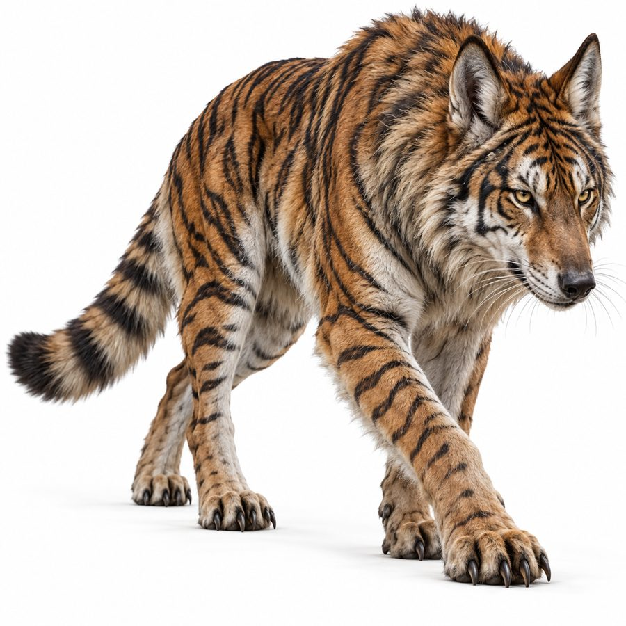

Xathelun
Tiger-wolf hybrids, the apex predator of the northern forest.
- Group
- Predators
- Tags
- predator Xathdrubooshle
- Range
- The northern forest, Xathdrubooshle. They can venture a little into the northwest volcanic edge but avoid settling in active volcanic ground. Canon
- Habits
- Excellent climbers. They will swim into the Xatheloru Sea to hunt when prey drives them toward the coast. They dirt-bathe like bison. Canon
- Prey
- Stray Ruqorith calves, Qorazil, and Skarith at the edges of forest settlements. Canon
Fur
Pelts are dangerous to get, so owning one is a status marker closer to owning tiger or snow-leopard fur than sheep’s wool. In practice it is restricted to the highest nobility and military honors. Canon
